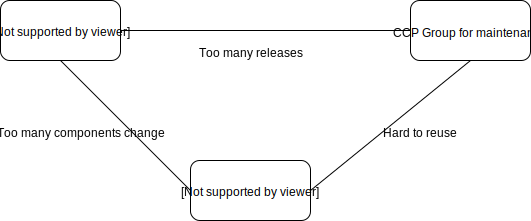
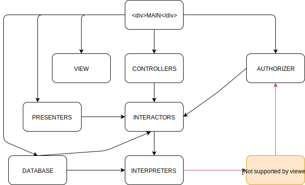
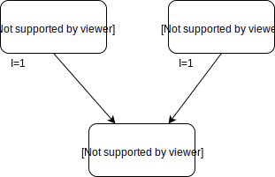
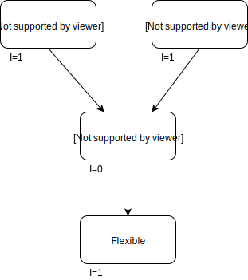
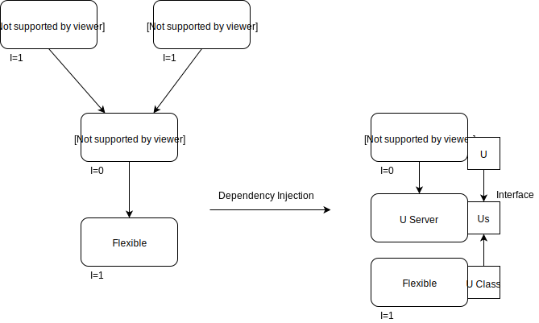
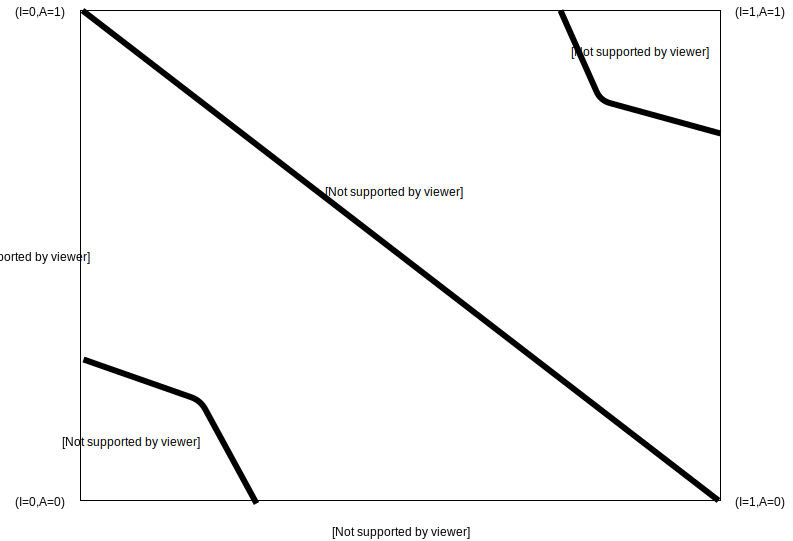

An Overview
Create software structures that:
A module should be responsible to one, and only one, actor
Usually mistaken with "a function should do one, and only one, thing", which is true anyway
A module is a cohesive set of functions and data structures
Employee class:
Three actors have been coupled in the same class:
if calculatePay() and reportHours() share a function and the Accounting Department needs a change, that change might impact on a function also used by Human Resources
Solution: Decouple in classes per actors
A software artifact should be open for extension but closed for modification
Next diagram describes a simple system to generate reports, the arrows point to their dependency.
Screen Presenter doesn't need to know about Web View, and Report Controller does not need to know about Screen Presenter
Any change on Web View won't affect Screen Presenter
Changes on Screen Presenter won't impact Report Controller
Report Interaction is protected from changes made in the whole system
It can be accomplished through Dependency Injection
Functions that use base classes must be able to use objects derived from the base classes without knowing it
Common problem of Ellipse inheriting from Circle base class, or Square inheriting from Rectangle Square class
If derived classes invalidate certain premises of the base class, LSP is violated
It can be detected because we are using "if instance of" or check special cases
Don't depend on classes that have methods that you don't need
ISP recommends segregating the three methods in three interfaces, and implement them in Ops class
Most flexible systems are those in which source code dependencies refer only to abstractions
Import, Use, Include... Should refer to source modules containing interfaces or abstract classes
Use concrete dependencies on stable classes (like String class in Java)
Don't refer to volatile concrete classes, but to abstract interfaces
Don't derive from volatile concrete classes
Don't override concrete functions
The art of grouping classes
Classes and modules that are grouped together into a Component should be released together
Gather into Components classes that change at the same time and for the same reasons. Separate into different Components classes that change at different times and for different reasons.
It's the SRP (Single Responsability Principle) and OCP (Open Closed Principle) version for architectures
Don't force users of a component to depend on things we don't need.
ISP (Interface Segregation Principle) version for architectures
Tension between Component Principles
The needs for the project vary along time.
The architecture must be adapted to balance the tension according to these needs.
Directed Acyclic Graph (DAG): No cycles, it's impossible to follow the arrows to go back to a component
Every change will affect a very limited number of Components
What happens if Entities must use Permissions, which depends on Authorizer?
A cycle appears
Breaking the cycle - Solution 1
Create a new Component, make both Entities and Authorizer depend on it:
Move the classes that both need to that Component.
The complexity of the system will be increased.
Breaking the cycle - Solution 2
Apply Dependency Inversion Principle:
An interface will have the methods the Entities needs.
Put that interface into Entities and inherit it into Authorizer.
Dependency Injection.
Depend on Stable modules/classes, not on volatile ones
How to measure volatility?
Metrics
Instability sould decrease in the direction of dependency
Wrong
Solution with Dependency Injection
A component should be as abstract as it is stable. Its stability does not prevent from being extended.
Metrics for abstractions
Now we can compare Abstractness and Stability
Zone of Pain: Very stable, very concrete, hard to change many dependants (String class, database schema, Utils).
Zone of Uselesness: High abstraction, little amount of dependants. Undesirable.
Distance from the Main Sequence
A component whose Distance is close to 1 should be examined
All these Principles are helpful to draw boundaries.
Boundaries can be, in order of strength:
The stronger the boundary, the more expensive to cross it (marshalling, serialize, network protocols...)
From inner circle to outer circle:
Frameworks
Database
Operating system
Devices
Are... Details
Architecture must be independent from Details.
Build the system to swap Details easily.
The architecture lies on the Business Rules, not on the Framework.
Agile Metholodogy let architects go back to coding instead of drawing boxes.
We hate duplication, but sometimes it's accidental.
Two architects might solve the same problem in two different ways, and the two solutions might be right.
Done with reveal.js
Diagrams created with draw.io